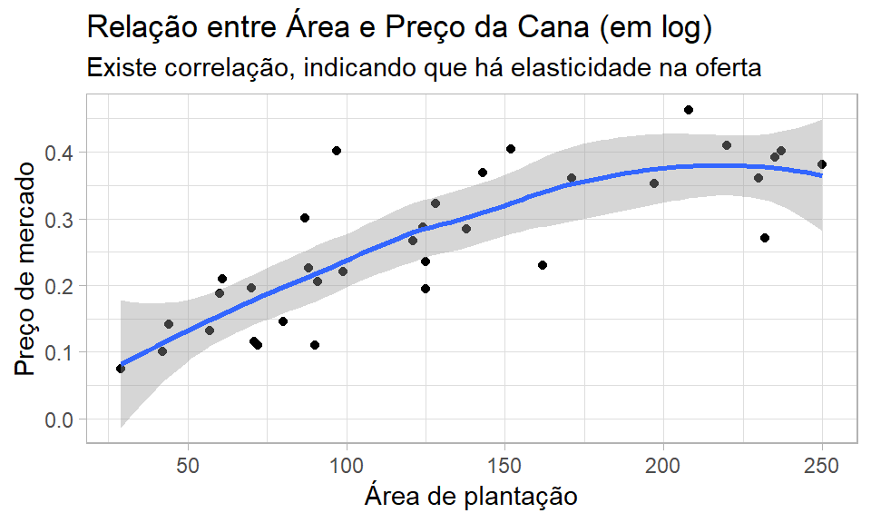
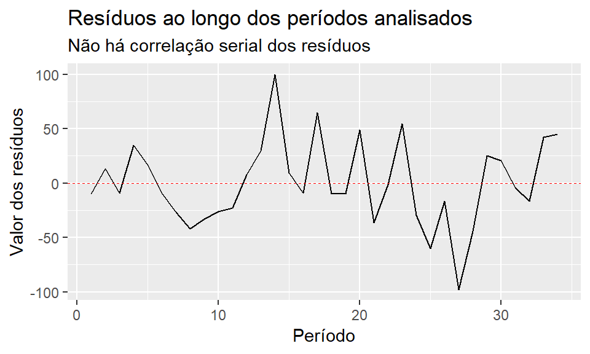
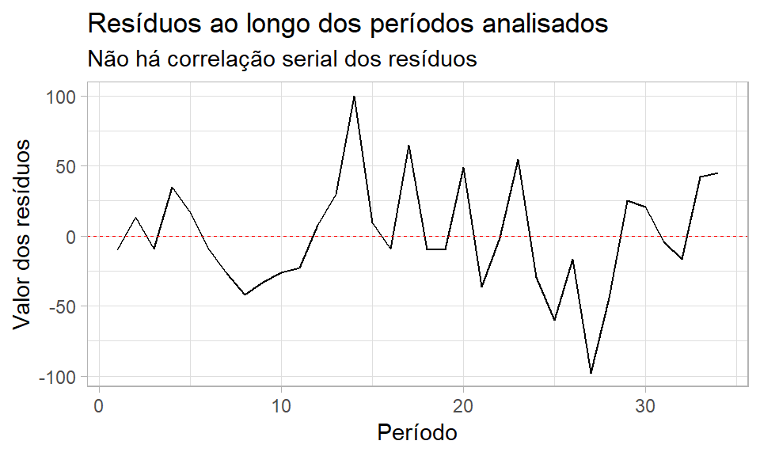

Pacotes utilizados para execução das atividades
library(tidyverse)
library(lmtest)
library(corrplot)
library(readxl)Objetivos: desenvolver gráficos para analisar autocorrelação de resíduos, aplicar o teste Durbin Watson, aplicar o teste Godfrey e aplicar o teste Q (a.k.a Ljung–Box test).
Base de dados com valores do preço da cana de açucar e área plantada (em hectares), por período analisado. Deseja-se avaliar a elasticidade da área plantada com relação ao preço, a partir de uma série histórica. O modelo é descrito abaixo:
\[ lnY_t = \beta_1+\beta_2 (lnX_t) + U_t \]
Onde:
\(Y_t\) = área plantada no ano t (em hectares)
\(X_t\) = preço no ano t
Base de dados para o exercício (apenas as primeiras 5 linhas):
## # A tibble: 6 x 3
## periodo area valor
## <dbl> <dbl> <dbl>
## 1 1 29 0.0753
## 2 2 71 0.115
## 3 3 42 0.101
## 4 4 90 0.110
## 5 5 72 0.110
## 6 6 57 0.132Gráfico de dispersão (área plantada x preço da cana)
dados %>%
ggplot(aes(x=Área,y=`Preço da Cana de Açúcar`))+
geom_point()
R: Primeiro, deve-se criar o modelo de regressão para depois gerar os erros. O modelo é resumido abaixo:
##
## Call:
## lm(formula = area ~ valor, data = dados_2)
##
## Residuals:
## Min 1Q Median 3Q Max
## -97.901 -25.544 -8.999 24.135 99.908
##
## Coefficients:
## Estimate Std. Error t value Pr(>|t|)
## (Intercept) 2.54 17.77 0.143 0.887
## valor 479.18 62.95 7.612 1.13e-08 ***
## ---
## Signif. codes: 0 '***' 0.001 '**' 0.01 '*' 0.05 '.' 0.1 ' ' 1
##
## Residual standard error: 39.65 on 32 degrees of freedom
## Multiple R-squared: 0.6442, Adjusted R-squared: 0.6331
## F-statistic: 57.95 on 1 and 32 DF, p-value: 1.131e-08Abaixo há uma amostra dos resíduos gerados pelo modelo:
## periodo area valor residual
## 1 1 29 0.075258 -9.602554
## 2 2 71 0.114894 13.404698
## 3 3 42 0.101075 -8.973524
## 4 4 90 0.110309 34.601735
## 5 5 72 0.109562 16.959682
## 6 6 57 0.132486 -9.025023Após gerar os resíduos, pode-se analisar se há autocorrelação. Os gráficos abaixo mostram se há este comportamento.


Dá para ver que não há autocorrelação entre os resíduos. Porém, para garantir, é interessante usar testes estatísticos formais, como o Durbin Watson ou Godfrey.
R: Abaixo há a aplicação do teste DW.
##
## Durbin-Watson test
##
## data: lr
## DW = 1.4745, p-value = 0.04089
## alternative hypothesis: true autocorrelation is greater than 0De maneira resumida, o valor-p foi de 0.04089 e o valor d, 1.91822. Neste teste, usa-se o valor d para gerar a conclusão do teste. Antes, é preciso trazer os intervalos para comparação deste valor d. Para encontrar o intervalor, use a tablea específica do teste.
De acordo com a tabela, sabendo a quantidade de registros (n = 33), a significância (0.05) e o nível de liberdade (degrees of freedom = 1) que é o número de variáveis independentes, pode-se achar os valores dl e du. Para este exercício tem-se:
dl = 1.35
du = 1.49
Sabendo que d = 1.91822 e os critérios do teste, pode-se concluir que a hipótese nula é verdadeira, ou seja, não existe autocorrelação. Isso corrobora os gráficos gerados anteriormente.
lmtest::bgtest(lr)##
## Breusch-Godfrey test for serial correlation of order up to 1
##
## data: lr
## LM test = 2.0872, df = 1, p-value = 0.1485O teste godfrey gerou um p valor de 0.1485
Box.test(residual,lag = 1,type = c("Box-Pierce", "Ljung-Box"), fitdf = 0)##
## Box-Pierce test
##
## data: residual
## X-squared = 1.9896, df = 1, p-value = 0.1584